現有問題
肌少症是一種隨著年齡漸長，肌肉量會逐漸流失的老化問題，肌肉量流失嚴重甚至會導致跌倒骨折。而長期處於靜態生活的中年族群（年齡 40~59 歲），更是罹患肌少症的高危險族群。現今肌少症尚未有藥物治療，提前建立阻力運動習慣及維持運動循環才能降低罹患肌少症的風險。
設計理念
KAMASO為一款針對中年族群肌肉量流失較快的下肢肌肉群，藉由體感遊戲的方式來維持肌力的產品，使用體感偵測以及肌肉感應來確保使用者運動正確肌群，降低運動傷害，透過介面連結數據查看自身的運動表現。
介面特點
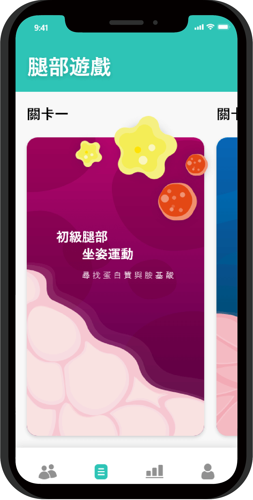
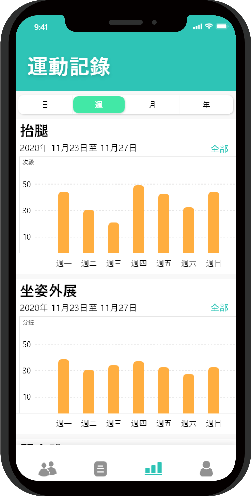
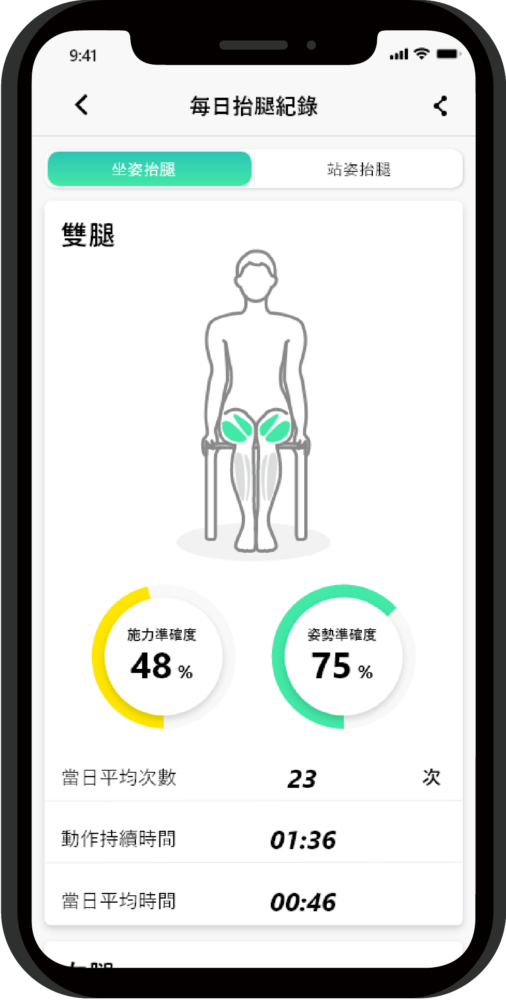
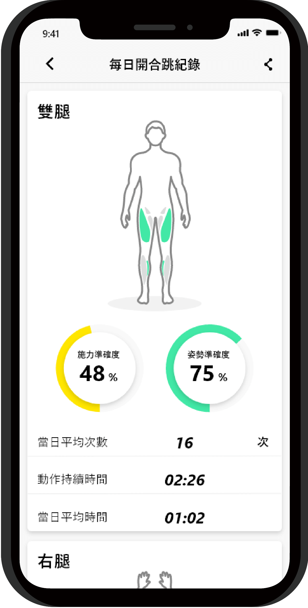
介面藉由遊戲的方式來進行運動訓練，有三種關卡讓使用者自由選擇，每個關卡都是針對下肢肌群的肌耐力為主。而系統會詳細記錄所有數據，其中包括肌群施力準確度、姿勢準確度、平均次數及每日運動時間，讓使用者能發現自己施力的問題點，將其運動傷害降至最低。
遊戲介紹
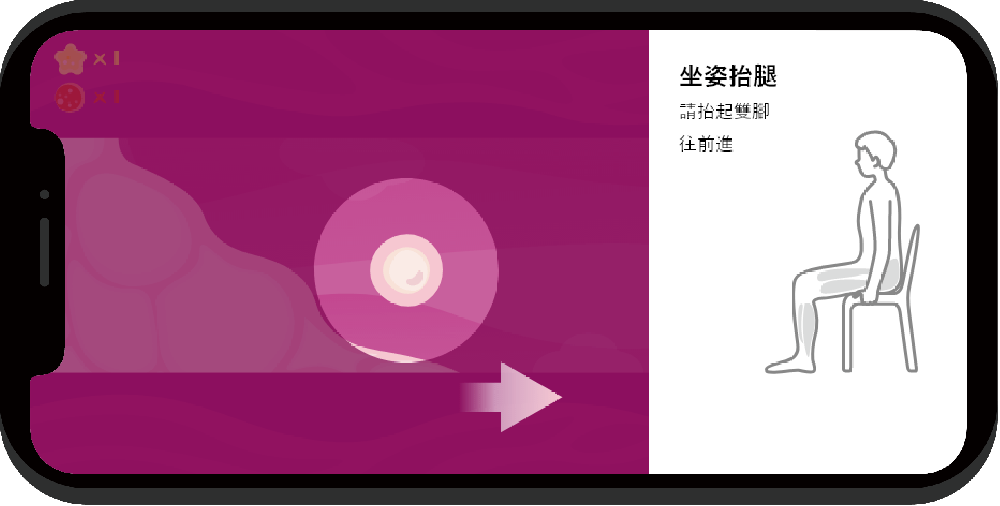
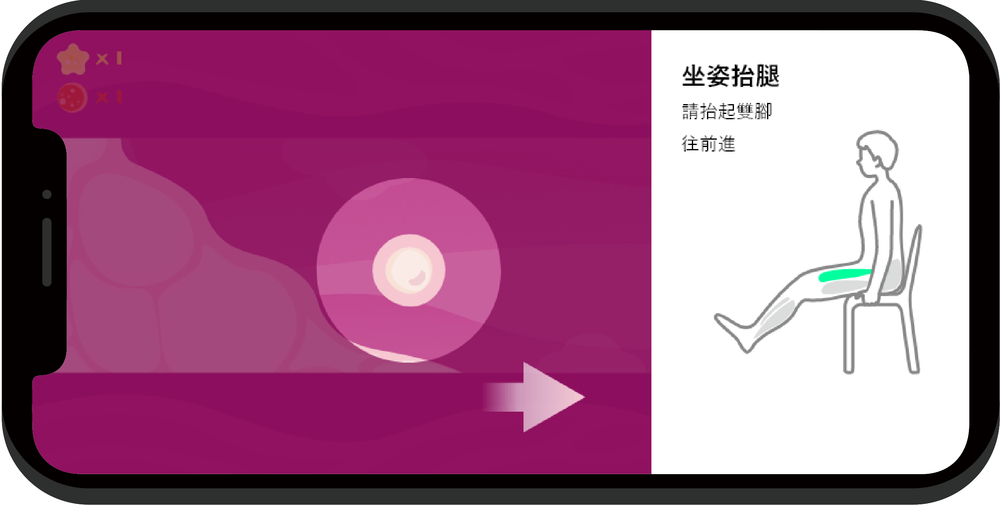
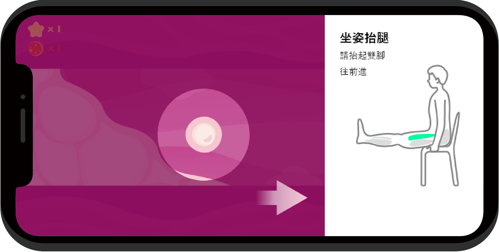
在Kamaso裡面，玩家會化身為體內正在流失的肌肉細胞，為了防止被流失，透過指定阻力運動來移動方向，以及攝取對於增肌有益的蛋白質與胺基酸，前往健康的肌肉群裡。
產品介紹
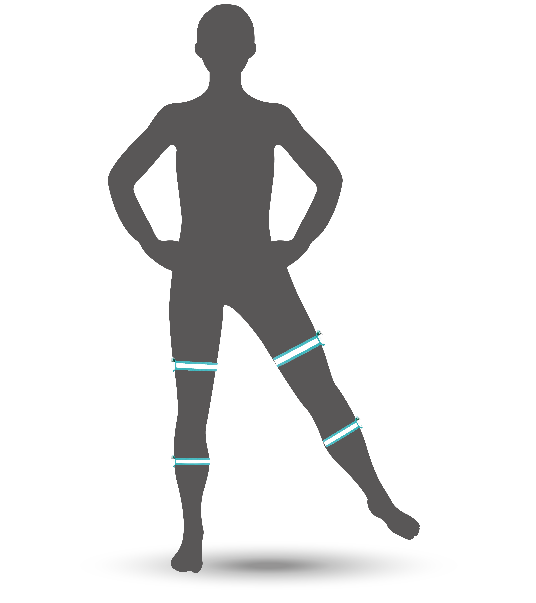
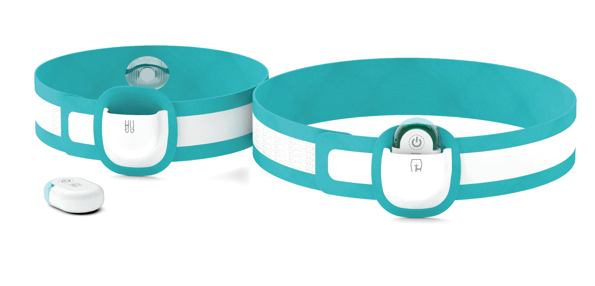
穿戴於大腿及小腿的中間處，大腿主要偵測股四頭肌及股二頭肌，小腿則是以腓腸肌為主。
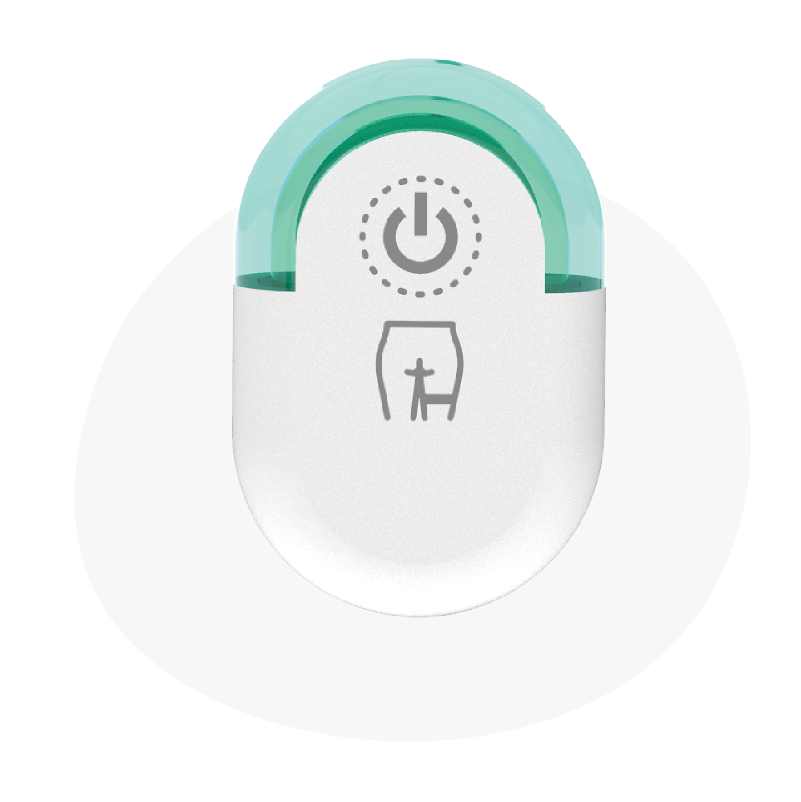
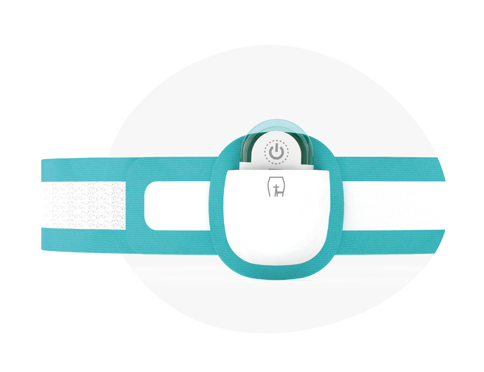
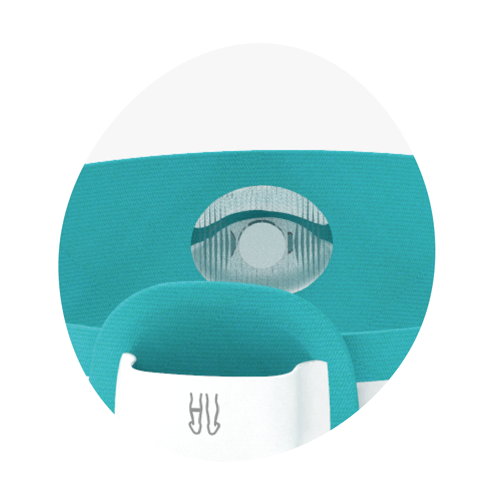
可拆式藍芽
裝有體感偵測及肌肉感應器，可感知使用者的運動軌跡，開機時上方會發出亮光。
大／小腿帶
彈性泡棉布料，可以適用任何腿型，旁邊的可拆式藍芽往上滑即可拿取。
肌肉貼片
感應使用者肌群施力的準確度，主要是感測腿部大肌群為主。